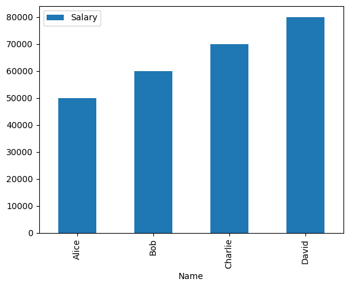

Mastering Pandas for Efficient Data Manipulation and Analysis
What is Pandas?
Pandas is a powerful library for data manipulation and analysis in Python. It provides data structures and functions to efficiently handle structured data, including tabular data such as spreadsheets and SQL tables.
Key Features of Pandas
- Data Structures: Series (1D) and DataFrame (2D) for flexible data handling.
- Data Manipulation: Merge, reshape, select, and clean data with ease.
- Data Analysis: Descriptive statistics, data visualization, and time series analysis tools.
- Integration: Seamless integration with NumPy, Matplotlib, and SciPy for enhanced functionality.
Why Use Pandas?
- Efficiency: Designed to handle large datasets with ease.
- Ease of Use: Intuitive syntax simplifies complex data tasks.
- Community Support: Active community ensures extensive documentation and support.
Getting Started with Pandas
Install Pandas using pip:
pip install pandasImport Pandas in your Python script:
import pandas as pdExample: Creating a DataFrame
import pandas as pd
data = {
'Name': ['Alice', 'Bob', 'Charlie'],
'Age': [25, 30, 35],
'City': ['New York', 'Los Angeles', 'Chicago']
}
df = pd.DataFrame(data)
print(df)Output:
| Name | Age | City |
|---|---|---|
| Alice | 25 | New York |
| Bob | 30 | Los Angeles |
| Charlie | 35 | Chicago |
Understanding Data Structures in Pandas: Series and DataFrames
Introduction to Pandas Series
A Pandas Series is a one-dimensional array-like object that can hold data of any type (integers, strings, floating points, etc.).
- Homogeneous Data: All elements in a Series are of the same data type.
- Indexing: Each element is indexed, providing fast access to data.
- Operations: Supports vectorized operations, making data manipulation efficient.
import pandas as pd
data = [10, 20, 30, 40]
series = pd.Series(data)
print(series)Output:
0 10
1 20
2 30
3 40
dtype: int64Deep Dive into Pandas DataFrames
A Pandas DataFrame is a two-dimensional, size-mutable, and potentially heterogeneous tabular data structure with labeled axes (rows and columns).
- Heterogeneous Data: Can hold different data types (integer, float, string, etc.) in different columns.
- Labeled Axes: Both rows and columns have labels, making data manipulation intuitive.
- Operations: Supports a wide range of operations such as filtering, grouping, and merging.
import pandas as pd
data = {
'Name': ['Alice', 'Bob', 'Charlie'],
'Age': [25, 30, 35],
'City': ['New York', 'Los Angeles', 'Chicago']
}
df = pd.DataFrame(data)
print(df)Output:
| Name | Age | City |
|---|---|---|
| Alice | 25 | New York |
| Bob | 30 | Los Angeles |
| Charlie | 35 | Chicago |
Key Differences: Series vs. DataFrames
| Feature | Series | DataFrames |
|---|---|---|
| Dimensionality | One-dimensional | Two-dimensional |
| Data Types | Homogeneous | Heterogeneous |
| Indexing | Single index | Row and column indices |
Additional Information
Operations on Series and DataFrames
- Series Operations: Element-wise operations, apply functions, and methods like
.sum(),.mean(), and.apply(). - DataFrame Operations: Support for
.groupby(),.merge(),.pivot(), and.join(), essential for data analysis and manipulation.
Use Cases
- Series:
- Ideal for time series data
- Suitable for single columns of data
- Simple data manipulations
- DataFrames:
- Suitable for complex data analysis
- Multi-dimensional data
- Operations involving multiple columns
Setting Up Your Environment for Pandas
Installing Pandas
pip install pandasSetting Up a Virtual Environment
# Create a virtual environment
python -m venv myenv
# Activate the virtual environment
# On Windows
myenv\Scripts\activate
# On macOS/Linux
source myenv/bin/activate
# Install Pandas in the virtual environment
pip install pandasChoosing the Right IDE for Pandas Development
- Jupyter Notebook: Ideal for interactive data analysis and visualization.
- PyCharm: A powerful IDE with advanced features like code completion, debugging, and version control integration.
- VS Code: A lightweight, highly customizable editor with extensions for Python development, including Jupyter support.
Setting Up Jupyter Notebook
pip install notebookjupyter notebookEssential Tools for Efficient Pandas Workflow
Data Visualization Libraries
- Matplotlib: A comprehensive library for creating static, animated, and interactive visualizations in Python.
- Seaborn: Built on top of Matplotlib, it provides a high-level interface for drawing attractive statistical graphics.
Data Cleaning and Transformation Tools
- OpenRefine: A powerful tool for working with messy data, cleaning, and transforming it.
- Dask: A parallel computing library that scales Pandas workflows to larger datasets.
Version Control
- Git: Essential for tracking changes in your code and collaborating with others. GitHub or GitLab can be used to host your repositories.
Working with Data in Pandas: A Comprehensive Guide
Importing and Exporting Data with Pandas
Pandas provides robust functions to read and write data from various file formats, making it easy to import data into your DataFrame and export it for further use.
Reading Various File Formats
Reading CSV Files
CSV (Comma-Separated Values) files are one of the most common data formats. Pandas makes it straightforward to read CSV files into a DataFrame.
import pandas as pd
# Reading a CSV file
df_csv = pd.read_csv('data.csv')
print(df_csv.head())Reading Excel Files
Excel files are widely used in data analysis. Pandas can read Excel files, including specific sheets.
import pandas as pd
# Reading an Excel file
df_excel = pd.read_excel('data.xlsx', sheet_name='Sheet1')
print(df_excel.head())Reading JSON Files
JSON (JavaScript Object Notation) is a popular format for data exchange. Pandas can easily read JSON files into a DataFrame.
import pandas as pd
# Reading a JSON file
df_json = pd.read_json('data.json')
print(df_json.head())Writing Data to Files
Pandas also makes it easy to export data from your DataFrame to various file formats.
Writing to CSV Files
import pandas as pd
# Writing to a CSV file
df.to_csv('output.csv', index=False)Writing to Excel Files
import pandas as pd
# Writing to an Excel file
df.to_excel('output.xlsx', sheet_name='Sheet1', index=False)Writing to JSON Files
import pandas as pd
# Writing to a JSON file
df.to_json('output.json', orient='records')Handling Different File Formats
CSV Files
Use pd.read_csv() and df.to_csv() for reading and writing CSV files. You can specify parameters like delimiter, header, and index.
import pandas as pd
# Reading a CSV file
df = pd.read_csv('data.csv', delimiter=',', header=0, index_col=0)
# Writing to a CSV file
df.to_csv('output.csv', index=False)Excel Files
Use pd.read_excel() and df.to_excel() for Excel files. You can specify the sheet name and other parameters.
import pandas as pd
# Reading an Excel file
df = pd.read_excel('data.xlsx', sheet_name='Sheet1')
# Writing to an Excel file
df.to_excel('output.xlsx', sheet_name='Sheet1', index=False)JSON Files
Use pd.read_json() and df.to_json() for JSON files. You can specify the orientation and other parameters.
import pandas as pd
# Reading a JSON file
df = pd.read_json('data.json', orient='records')
# Writing to a JSON file
df.to_json('output.json', orient='records')Common Operations
Filtering Data
Use methods like .loc[] and .iloc[] to filter data based on conditions.
import pandas as pd
# Create a sample DataFrame
df = pd.DataFrame({
'Name': ['Alice', 'Bob', 'Charlie'],
'Age': [25, 30, 35]
})
# Filter data using .loc[]
filtered_df = df.loc[df['Age'] > 30]
print(filtered_df)Grouping Data
Use .groupby() to group data and perform aggregate functions.
import pandas as pd
# Create a sample DataFrame
df = pd.DataFrame({
'Name': ['Alice', 'Bob', 'Charlie'],
'Age': [25, 30, 35],
'City': ['New York', 'Los Angeles', 'Chicago']
})
# Group data by City and calculate mean Age
grouped_df = df.groupby('City')['Age'].mean()
print(grouped_df)Merging Data
Use .merge() to combine DataFrames based on common columns.
import pandas as pd
# Create two sample DataFrames
df1 = pd.DataFrame({
'Name': ['Alice', 'Bob', 'Charlie'],
'Age': [25, 30, 35]
})
df2 = pd.DataFrame({
'Name': ['Alice', 'Bob', 'Charlie'],
'City': ['New York', 'Los Angeles', 'Chicago']
})
# Merge DataFrames on the 'Name' column
merged_df = pd.merge(df1, df2, on='Name')
print(merged_df)Handling Different Data Sources
Databases
Pandas can connect to various databases using libraries like SQLAlchemy for SQL databases. This allows you to read from and write to databases directly.
Example: Reading from a SQL Database
import pandas as pd
from sqlalchemy import create_engine
# Create an engine instance
engine = create_engine('sqlite:///mydatabase.db')
# Read data from a SQL table
df_sql = pd.read_sql('SELECT * FROM my_table', engine)
print(df_sql.head())URLs
Pandas can also read data directly from URLs, which is useful for accessing online datasets.
Example: Reading CSV from a URL
import pandas as pd
# Reading a CSV file from a URL
url = 'https://example.com/data.csv'
df_url = pd.read_csv(url)
print(df_url.head())Cleaning and Preprocessing Data for Analysis
Removing Duplicates
Duplicates can skew your analysis by over-representing certain data points. Removing duplicates ensures that each data point is unique.
import pandas as pd
# Sample DataFrame with duplicates
data = {'Name': ['Alice', 'Bob', 'Alice', 'Charlie'],
'Age': [25, 30, 25, 35]}
df = pd.DataFrame(data)
# Removing duplicate rows
df_cleaned = df.drop_duplicates()
print(df_cleaned)Converting Data Types
Ensuring that data types are appropriate for analysis is crucial. For example, numerical operations require numeric data types.
import pandas as pd
# Sample DataFrame with string data type
data = {'Name': ['Alice', 'Bob', 'Charlie'],
'Age': ['25', '30', '35']}
df = pd.DataFrame(data)
# Converting 'Age' column to integer type
df['Age'] = df['Age'].astype(int)
print(df.dtypes)Normalizing Data
Normalization scales the data to a standard range, which is essential for certain types of analysis.
import pandas as pd
from sklearn.preprocessing import MinMaxScaler
# Sample DataFrame
data = {'Feature1': [10, 20, 30, 40],
'Feature2': [100, 200, 300, 400]}
df = pd.DataFrame(data)
# Normalizing data
scaler = MinMaxScaler()
df[['Feature1', 'Feature2']] = scaler.fit_transform(df[['Feature1', 'Feature2']])
print(df)Handling Missing Data
Missing data can lead to inaccurate analysis. Pandas provides several methods to handle missing data, such as filling with a specific value or dropping rows/columns with missing values.
Filling Missing Values
import pandas as pd
# Sample DataFrame with missing values
data = {'Name': ['Alice', 'Bob', 'Charlie'],
'Age': [25, None, 35]}
df = pd.DataFrame(data)
# Filling missing values with the mean of the column
df['Age'].fillna(df['Age'].mean(), inplace=True)
print(df)Dropping Rows with Missing Values
import pandas as pd
# Sample DataFrame with missing values
data = {'Name': ['Alice', 'Bob', 'Charlie'],
'Age': [25, None, 35]}
df = pd.DataFrame(data)
# Dropping rows with missing values
df_cleaned = df.dropna()
print(df_cleaned)Identifying and Handling Missing Data
Identifying Missing Data
Use isnull() and sum() to identify missing data in your DataFrame. This helps you understand the extent of missing data in each column.
import pandas as pd
# Sample DataFrame with missing values
data = {'Name': ['Alice', 'Bob', 'Charlie'],
'Age': [25, None, 35],
'City': ['New York', 'Los Angeles', None]}
df = pd.DataFrame(data)
# Identifying missing data
missing_data = df.isnull().sum()
print(missing_data)Handling Missing Data
Dropping Missing Values
You can drop rows or columns with missing values using dropna(). This is useful when the missing data is not significant or when you have a large dataset.
import pandas as pd
# Dropping rows with missing values
df_dropped = df.dropna()
print(df_dropped)Filling Missing Values
Alternatively, you can fill missing values using fillna(). This is useful when you want to retain all data points and replace missing values with a specific value or a calculated value.
import pandas as pd
# Filling missing values with a specific value
df_filled = df.fillna(0)
print(df_filled)
# Filling missing values with the mean of the column
df['Age'].fillna(df['Age'].mean(), inplace=True)
print(df)Data Normalization and Scaling
What is Data Normalization?
Data normalization is the process of adjusting values measured on different scales to a common scale, often between 0 and 1. This is crucial for algorithms that are sensitive to the scale of data, such as gradient descent in machine learning.
Example: Min-Max Scaling
import pandas as pd
from sklearn.preprocessing import MinMaxScaler
# Sample data
data = {'Value': [10, 20, 30, 40, 50]}
df = pd.DataFrame(data)
# Applying Min-Max Scaling
scaler = MinMaxScaler()
df['Scaled_Value'] = scaler.fit_transform(df[['Value']])
print(df)What is Data Scaling?
Data scaling involves transforming data to fit within a specific range or distribution. Common scaling techniques include standardization (z-score normalization), which transforms data to have a mean of 0 and a standard deviation of 1.
Example: Standardization
import pandas as pd
from sklearn.preprocessing import StandardScaler
# Sample data
data = {'Value': [10, 20, 30, 40, 50]}
df = pd.DataFrame(data)
# Applying Standardization
scaler = StandardScaler()
df['Standardized_Value'] = scaler.fit_transform(df[['Value']])
print(df)Encoding Categorical Variables
Why Encode Categorical Variables?
Machine learning algorithms require numerical input, so categorical variables must be converted into a numerical format. This process is known as encoding.
Common Encoding Techniques
One-Hot Encoding
One-hot encoding converts categorical variables into a series of binary columns. Each category becomes a column, and the presence of the category is marked with a 1, while absence is marked with a 0.
Example: One-Hot Encoding
import pandas as pd
# Sample data
data = {'City': ['New York', 'Los Angeles', 'Chicago']}
df = pd.DataFrame(data)
# Applying One-Hot Encoding
df_encoded = pd.get_dummies(df, columns=['City'])
print(df_encoded)Label Encoding
Label encoding assigns each unique category a numerical label. This method is simpler but can introduce ordinal relationships where none exist.
Example: Label Encoding
import pandas as pd
from sklearn.preprocessing import LabelEncoder
# Sample data
data = {'City': ['New York', 'Los Angeles', 'Chicago']}
df = pd.DataFrame(data)
# Applying Label Encoding
encoder = LabelEncoder()
df['City_Encoded'] = encoder.fit_transform(df['City'])
print(df)Data Transformation and Manipulation Essentials
Filtering, Sorting, and Grouping Data
Filtering Data
Filtering allows you to subset your DataFrame based on conditions.
import pandas as pd
# Sample data
data = {'Name': ['Alice', 'Bob', 'Charlie', 'David'],
'Age': [25, 30, 35, 40]}
df = pd.DataFrame(data)
# Filtering rows where Age > 30
filtered_df = df[df['Age'] > 30]
print(filtered_df)Sorting Data
Sorting helps you arrange your data in a specific order.
import pandas as pd
# Sorting by Age in descending order
sorted_df = df.sort_values(by='Age', ascending=False)
print(sorted_df)Grouping Data
Grouping is useful for aggregating data based on certain criteria.
import pandas as pd
# Sample data
data = {'Name': ['Alice', 'Bob', 'Charlie', 'David'],
'Age': [25, 30, 35, 40],
'City': ['New York', 'Los Angeles', 'Chicago', 'New York']}
df = pd.DataFrame(data)
# Grouping by City and calculating the mean Age
grouped_df = df.groupby('City')['Age'].mean()
print(grouped_df)Merging and Joining DataFrames
Merging DataFrames
Merging combines two DataFrames based on a common column or index.
import pandas as pd
# Sample data
data1 = {'Name': ['Alice', 'Bob'], 'Age': [25, 30]}
data2 = {'Name': ['Alice', 'Bob'], 'City': ['New York', 'Los Angeles']}
df1 = pd.DataFrame(data1)
df2 = pd.DataFrame(data2)
# Merging on 'Name' column
merged_df = pd.merge(df1, df2, on='Name')
print(merged_df)Joining DataFrames
Joining is similar to merging but is used with DataFrames that have a common index.
import pandas as pd
# Sample data
data1 = {'Name': ['Alice', 'Bob'], 'Age': [25, 30]}
data2 = {'Name': ['Alice', 'Bob'], 'City': ['New York', 'Los Angeles']}
df1 = pd.DataFrame(data1).set_index('Name')
df2 = pd.DataFrame(data2).set_index('Name')
# Joining DataFrames
joined_df = df1.join(df2)
print(joined_df)Pivoting and Melting Data
Pivoting Data
Pivoting reshapes data by turning unique values from one column into multiple columns.
import pandas as pd
# Sample data
data = {'Name': ['Alice', 'Bob', 'Alice', 'Bob'],
'Year': [2020, 2020, 2021, 2021],
'Score': [85, 90, 88, 92]}
df = pd.DataFrame(data)
# Pivoting the DataFrame
pivot_df = df.pivot(index='Name', columns='Year', values='Score')
print(pivot_df)Melting Data
Melting is the reverse of pivoting, transforming columns into rows.
import pandas as pd
# Sample data
data = {'Name': ['Alice', 'Bob'],
'2020': [85, 90],
'2021': [88, 92]}
df = pd.DataFrame(data)
# Melting the DataFrame
melted_df = pd.melt(df, id_vars=['Name'], var_name='Year', value_name='Score')
print(melted_df)Additional Examples
Filtering with Multiple Conditions
import pandas as pd
# Sample data
data = {'Name': ['Alice', 'Bob', 'Charlie', 'David'],
'Age': [25, 30, 35, 40]}
df = pd.DataFrame(data)
# Filtering rows where Age > 30 and Name starts with 'C'
filtered_df = df[(df['Age'] > 30) & (df['Name'].str.startswith('C'))]
print(filtered_df)Sorting by Multiple Columns
import pandas as pd
# Sample data
data = {'Name': ['Alice', 'Bob', 'Charlie', 'David'],
'Age': [25, 30, 35, 40]}
df = pd.DataFrame(data)
# Sorting by Age and then by Name in ascending order
sorted_df = df.sort_values(by=['Age', 'Name'], ascending=[True, True])
print(sorted_df)Grouping and Aggregating Multiple Columns
import pandas as pd
# Sample data
data = {'Name': ['Alice', 'Bob', 'Charlie', 'David'],
'Age': [25, 30, 35, 40],
'City': ['New York', 'Los Angeles', 'Chicago', 'New York']}
df = pd.DataFrame(data)
# Grouping by City and calculating the mean and count of Age
grouped_df = df.groupby('City').agg({'Age': ['mean', 'count']})
print(grouped_df)Data Analysis and Visualization
Unleashing Data Insights: Analytical Functions in Pandas
Pandas provides a variety of analytical functions that help you extract meaningful insights from your data. These functions include aggregation, transformation, and filtering operations that can be applied to your DataFrame.
Example: Aggregation Functions
import pandas as pd
# Sample data
data = {'Name': ['Alice', 'Bob', 'Charlie', 'David'],
'Age': [25, 30, 35, 40],
'Salary': [50000, 60000, 70000, 80000]}
df = pd.DataFrame(data)
# Calculating the mean salary
mean_salary = df['Salary'].mean()
print(f"Mean Salary: {mean_salary}")Summary Statistics and Data Description
Pandas makes it easy to generate summary statistics and descriptive information about your data.
Example: Summary Statistics
import pandas as pd
# Sample data
data = {'Name': ['Alice', 'Bob', 'Charlie', 'David'],
'Age': [25, 30, 35, 40],
'Salary': [50000, 60000, 70000, 80000]}
df = pd.DataFrame(data)
# Generating summary statistics
summary = df.describe()
print(summary)Working with Time Series Data
Pandas has robust support for time series data, allowing you to perform operations like resampling, shifting, and rolling computations.
Example: Time Series Data
import pandas as pd
# Sample time series data
dates = pd.date_range('20230101', periods=6)
data = {'Value': [1, 2, 3, 4, 5, 6]}
df = pd.DataFrame(data, index=dates)
# Resampling data to monthly frequency
monthly_df = df.resample('M').sum()
print(monthly_df)Correlation and Covariance Analysis
Understanding the relationships between variables is crucial in data analysis. Pandas provides functions to calculate correlation and covariance.
Example: Correlation Analysis
import pandas as pd
# Sample data
data = {'A': [1, 2, 3, 4, 5],
'B': [5, 4, 3, 2, 1],
'C': [2, 3, 4, 5, 6]}
df = pd.DataFrame(data)
# Calculating correlation matrix
correlation_matrix = df.corr()
print(correlation_matrix)Example: Covariance Analysis
import pandas as pd
# Sample data
data = {'A': [1, 2, 3, 4, 5],
'B': [5, 4, 3, 2, 1],
'C': [2, 3, 4, 5, 6]}
df = pd.DataFrame(data)
# Calculating covariance matrix
covariance_matrix = df.cov()
print(covariance_matrix)Additional Information
Advanced Analytical Functions
- Rolling Window Calculations: Use
.rolling()to perform calculations over a rolling window. - Expanding Window Calculations: Use
.expanding()for expanding window calculations. - Cumulative Operations: Use
.cumsum(),.cumprod(), etc., for cumulative operations.
Example: Rolling Window Calculations
import pandas as pd
# Sample data
data = {'Value': [1, 2, 3, 4, 5, 6, 7, 8, 9, 10]}
df = pd.DataFrame(data)
# Calculating rolling mean with a window size of 3
df['Rolling_Mean'] = df['Value'].rolling(window=3).mean()
print(df)Example: Expanding Window Calculations
import pandas as pd
# Sample data
data = {'Value': [1, 2, 3, 4, 5, 6, 7, 8, 9, 10]}
df = pd.DataFrame(data)
# Calculating expanding mean
df['Expanding_Mean'] = df['Value'].expanding().mean()
print(df)Example: Cumulative Operations
import pandas as pd
# Sample data
data = {'Value': [1, 2, 3, 4, 5, 6, 7, 8, 9, 10]}
df = pd.DataFrame(data)
# Calculating cumulative sum
df['Cumulative_Sum'] = df['Value'].cumsum()
print(df)Visualization with Pandas
Pandas integrates well with Matplotlib for creating visualizations.
Example: Bar Chart
import pandas as pd
import matplotlib.pyplot as plt
# Sample data
data = {'Name': ['Alice', 'Bob', 'Charlie', 'David'],
'Age': [25, 30, 35, 40],
'Salary': [50000, 60000, 70000, 80000]}
df = pd.DataFrame(data)
# Plotting a bar chart
df.plot(kind='bar', x='Name', y='Salary')
plt.show()Output:
Visualizing Data with Pandas and Matplotlib/Seaborn
Introduction to Data Visualization
Data visualization is a crucial aspect of data analysis, allowing you to represent data graphically to uncover patterns, trends, and insights. Effective visualizations can make complex data more accessible and understandable.
Plotting with Matplotlib for Pandas Data
Matplotlib is a comprehensive library for creating static, animated, and interactive visualizations in Python. It integrates seamlessly with Pandas, making it easy to plot data directly from DataFrames.
Example: Basic Plotting with Matplotlib
import pandas as pd
import matplotlib.pyplot as plt
# Sample data
data = {'Name': ['Alice', 'Bob', 'Charlie', 'David'],
'Age': [25, 30, 35, 40]}
df = pd.DataFrame(data)
# Plotting a bar chart
df.plot(kind='bar', x='Name', y='Age')
plt.title('Age of Individuals')
plt.xlabel('Name')
plt.ylabel('Age')
plt.show()Output:
Example: Line Plot
import pandas as pd
import matplotlib.pyplot as plt
# Sample data
data = {'Year': [2020, 2021, 2022, 2023],
'Sales': [100, 150, 200, 250]}
df = pd.DataFrame(data)
# Plotting a line chart
df.plot(kind='line', x='Year', y='Sales')
plt.title('Yearly Sales')
plt.xlabel('Year')
plt.ylabel('Sales')
plt.show()Output:

Advanced Visualization with Seaborn
Seaborn is built on top of Matplotlib and provides a high-level interface for drawing attractive and informative statistical graphics. It is particularly useful for visualizing complex datasets.
Example: Scatter Plot with Seaborn
import pandas as pd
import seaborn as sns
import matplotlib.pyplot as plt
# Sample data
data = {'Height': [150, 160, 170, 180, 190],
'Weight': [50, 60, 70, 80, 90]}
df = pd.DataFrame(data)
# Plotting a scatter plot
sns.scatterplot(data=df, x='Height', y='Weight')
plt.title('Height vs. Weight')
plt.xlabel('Height (cm)')
plt.ylabel('Weight (kg)')
plt.show()Output:

Example: Heatmap with Seaborn
import pandas as pd
import seaborn as sns
import matplotlib.pyplot as plt
# Sample data
data = {'A': [1, 2, 3, 4],
'B': [4, 3, 2, 1],
'C': [5, 6, 7, 8]}
df = pd.DataFrame(data)
# Plotting a heatmap
sns.heatmap(df.corr(), annot=True, cmap='coolwarm')
plt.title('Correlation Heatmap')
plt.show()Output:

Additional Examples
Histogram with Matplotlib
Histograms are useful for visualizing the distribution of a dataset.
import pandas as pd
import matplotlib.pyplot as plt
# Sample data
data = {'Age': [25, 30, 35, 40, 45, 50, 55, 60]}
df = pd.DataFrame(data)
# Plotting a histogram
df['Age'].plot(kind='hist', bins=5)
plt.title('Age Distribution')
plt.xlabel('Age')
plt.ylabel('Frequency')
plt.show()Output:
Box Plot with Seaborn
Box plots are useful for visualizing the distribution and identifying outliers.
import pandas as pd
import seaborn as sns
import matplotlib.pyplot as plt
# Sample data
data = {'Category': ['A', 'A', 'B', 'B'],
'Value': [10, 20, 30, 40]}
df = pd.DataFrame(data)
# Plotting a box plot
sns.boxplot(data=df, x='Category', y='Value')
plt.title('Box Plot of Values by Category')
plt.xlabel('Category')
plt.ylabel('Value')
plt.show()Output:
Case Study: End-to-End Data Analysis with Pandas
Problem Statement
In this case study, we aim to analyze sales data to understand trends and patterns. Our goal is to identify the best-selling products, peak sales periods, and customer demographics that contribute most to sales.
Data Import to Insight Generation
Step 1: Importing Data
First, we need to import the sales data from a CSV file into a Pandas DataFrame.
import pandas as pd
# Importing the sales data
df = pd.read_csv('sales_data.csv')
print(df.head())Step 2: Data Cleaning
Next, we clean the data by handling missing values, correcting data types, and removing duplicates.
# Handling missing values
df.dropna(inplace=True)
# Correcting data types
df['Date'] = pd.to_datetime(df['Date'])
# Removing duplicates
df.drop_duplicates(inplace=True)Step 3: Data Transformation
We transform the data to make it suitable for analysis. This includes creating new columns, aggregating data, and normalizing values.
# Creating a new column for total sales
df['Total_Sales'] = df['Quantity'] * df['Price']
# Aggregating data by product
product_sales = df.groupby('Product')['Total_Sales'].sum().reset_index()Step 4: Insight Generation
We generate insights by performing various analyses, such as identifying the best-selling products and peak sales periods.
# Identifying best-selling products
best_selling_products = product_sales.sort_values(by='Total_Sales', ascending=False)
print(best_selling_products.head())
# Identifying peak sales periods
df['Month'] = df['Date'].dt.month
monthly_sales = df.groupby('Month')['Total_Sales'].sum().reset_index()
print(monthly_sales)Visualization and Reporting
Step 5: Visualizing Data
We use Matplotlib and Seaborn to create visualizations that help us understand the data better.
import matplotlib.pyplot as plt
import seaborn as sns
# Plotting best-selling products
plt.figure(figsize=(10, 6))
sns.barplot(data=best_selling_products.head(10), x='Total_Sales', y='Product')
plt.title('Top 10 Best-Selling Products')
plt.xlabel('Total Sales')
plt.ylabel('Product')
plt.show()
# Plotting monthly sales
plt.figure(figsize=(10, 6))
sns.lineplot(data=monthly_sales, x='Month', y='Total_Sales')
plt.title('Monthly Sales Trend')
plt.xlabel('Month')
plt.ylabel('Total Sales')
plt.show()Output:

Step 6: Reporting
Finally, we compile our findings into a report, summarizing the key insights and visualizations.
Sales Data Analysis Report
Key Insights
- Top 10 Best-Selling Products: Product A, Product B, Product C, etc.
- Peak Sales Periods: Highest sales observed in months X, Y, and Z.
Visualizations
- Bar Chart: Top 10 Best-Selling Products
- Line Chart: Monthly Sales Trend
Recommendations
- Focus marketing efforts on best-selling products.
- Plan inventory and staffing around peak sales periods.
Additional Information
Advanced Analysis
- Customer Demographics: Analyze customer data to understand which demographics contribute most to sales.
- Sales Forecasting: Use time series analysis to forecast future sales trends.
Advanced Topics and Best Practices
Optimizing Pandas for Performance: Tips and Tricks
1. Use Vectorized Operations
Vectorized operations in Pandas are designed to perform computations more efficiently by applying operations to entire arrays rather than individual elements. This can significantly speed up your data processing tasks.
Example: Vectorized Operations
import pandas as pd
# Sample data
data = {'A': [1, 2, 3, 4, 5]}
df = pd.DataFrame(data)
# Vectorized operation to square each element
df['A_squared'] = df['A'] ** 2
print(df)2. Efficient Data Storage with Categoricals
Using categorical data types can reduce memory usage and improve performance, especially when dealing with columns that have a limited number of unique values.
Example: Using Categoricals
import pandas as pd
# Sample data
data = {'City': ['New York', 'Los Angeles', 'Chicago', 'New York', 'Chicago']}
df = pd.DataFrame(data)
# Converting to categorical data type
df['City'] = df['City'].astype('category')
print(df.info())3. Leveraging Dask for Large Datasets
Dask is a parallel computing library that scales Pandas workflows to larger-than-memory datasets. It allows you to work with large datasets by breaking them into smaller, manageable chunks and processing them in parallel.
Example: Using Dask with Pandas
import dask.dataframe as dd
# Reading a large CSV file with Dask
df = dd.read_csv('large_data.csv')
# Performing operations on the Dask DataFrame
result = df.groupby('column_name').mean().compute()
print(result)Additional Tips for Optimizing Pandas Performance
4. Use apply() Sparingly
While apply() is a powerful function, it can be slower than vectorized operations. Use it only when necessary.
Example: Using apply() Sparingly
# Example of using apply() sparingly
df['A_squared'] = df['A'].apply(lambda x: x ** 2)5. Optimize Memory Usage
Monitor and optimize memory usage by using appropriate data types and avoiding unnecessary copies of DataFrames.
Example: Optimizing Memory Usage
# Example of optimizing memory usage
df['A'] = df['A'].astype('int32')6. Use Chunking for Large Files
When dealing with large files, read them in chunks to avoid memory overload.
Example: Reading a Large File in Chunks
# Example of reading a large file in chunks
chunk_size = 10000
chunks = pd.read_csv('large_data.csv', chunksize=chunk_size)
for chunk in chunks:
process(chunk)Future of Pandas and Emerging Trends in Data Science
Upcoming Features and Releases
Pandas continues to evolve with new features and improvements aimed at enhancing performance and usability. Some of the upcoming features include:
- Enhanced Performance: Ongoing efforts to optimize performance, especially for large datasets, through better memory management and faster computation.
- Improved Integration with Other Libraries: Enhancements to ensure seamless integration with other data science libraries like Dask, NumPy, and Scikit-learn.
- New Data Manipulation Functions: Introduction of new functions to simplify complex data manipulation tasks, making it easier for users to handle and analyze data.